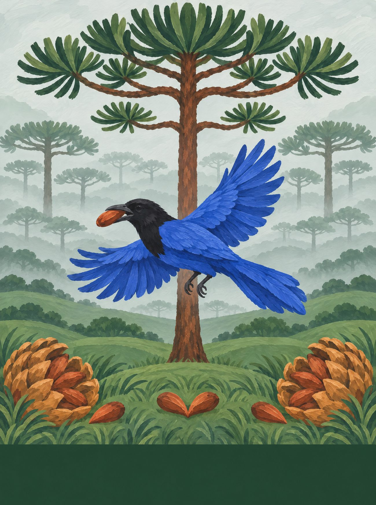
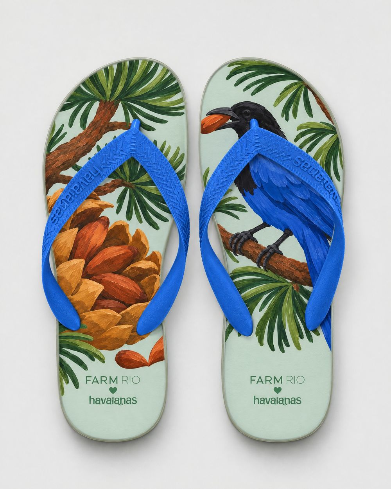
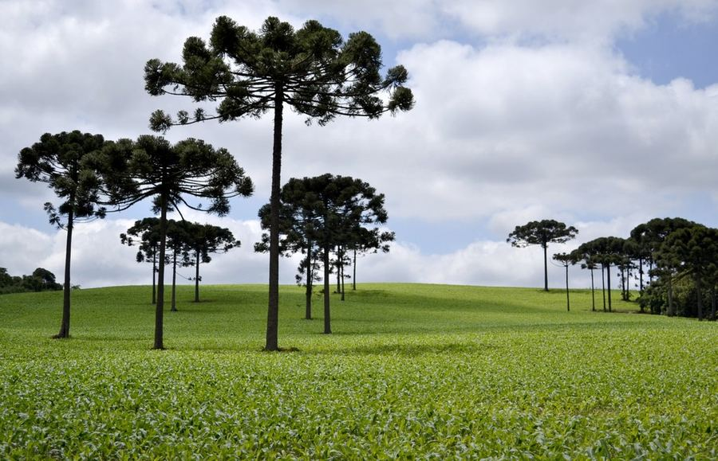
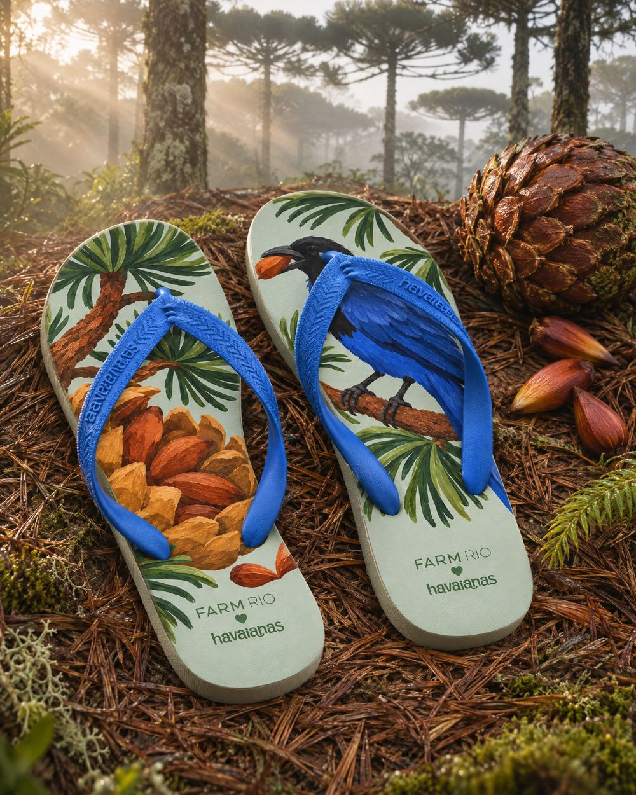
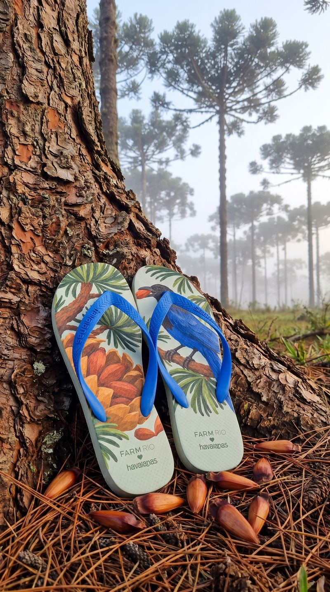
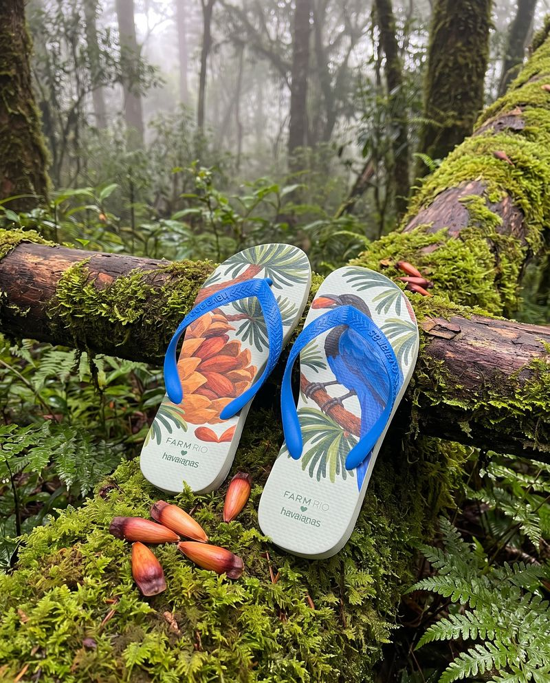

Paraná
Gralha e Pinhão
A gralha-azul enterra o pinhão e planta a floresta de araucária sem querer: por isso virou o símbolo do Paraná.
12 / 14 · Sul

o coração
Encontre o coração
Ele não está desenhado em cima de nada. Aparece quando os próprios elementos da cena se encontram. Procure na ilustração e toque nele.
♥ dois pinhões encostados na grama


o par
Dois pés, uma história
na palmilha
pé esquerdo com o galho de araucária, a pinha abrindo e pinhões soltos; pé direito com a gralha-azul segurando um pinhão no bico.
borracha e tira
verde-neblina da mata de araucária; tira azul-gralha.
a arte da palmilha
Em díptico

caderno de campo
O Paraná tem forma de araucária: copa aberta como um candelabro, recortada no céu frio dos Campos Gerais. A gralha-azul enterra o pinhão e planta a floresta sem querer, e por isso virou símbolo do estado. Em Curitiba, a estufa de vidro e ferro do Jardim Botânico brilha no meio dos canteiros, e o inverno pede pinhão cozido. Em Prudentópolis, as igrejas ucranianas têm cúpulas em forma de cebola, e as pêssankas, ovos pintados com cera, guardam desenhos antigos. O trem desce a Serra do Mar até Morretes, onde o barreado cozinha devagar.
trilha · o apito do trem da Serra do Mar · o fandango caiçara do litoral · a chaleira do pinhão no fogão
A âncora: a araucária com a gralha-azul, árvore e ave símbolo do Paraná.
pesquisa de campo
Na rua, antes do desenho



campanha
O par no lugar


fotos de campo deste estado
 ← Goiás
← Goiás